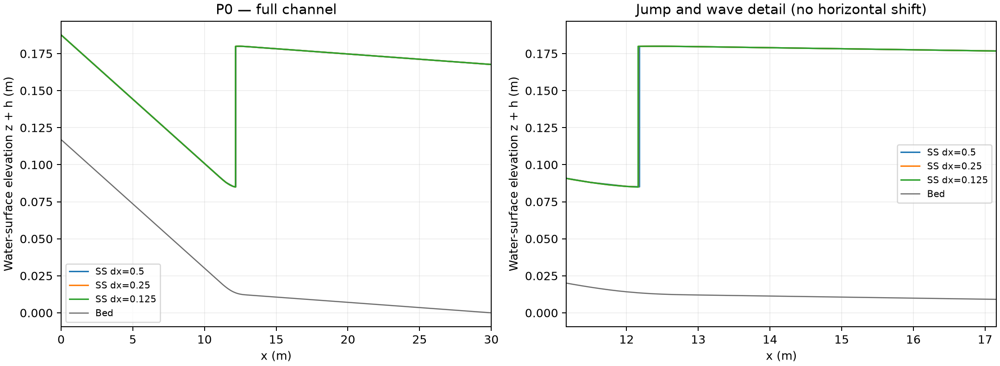

P0第二組完整示範：Python標準步法／HEC-RAS 6.6
跟著本頁完成一輪P0：每一步都標明操作位置、應看到的結果及判讀方式。程式區塊與附帶Notebook一致。
Notebook檔案：p0_group_b.ipynb（在Jupyter中開啟） · 兩組示範入口
P0是一座長 、寬 的矩形渠道。水由左向右流， 是入口， 是出口；上游陡坡在 至 平滑變成緩坡。固定流量與尾水後，觀察水流由淺而快變成深而慢的位置。
SS是Standard-step method（標準步法）；SV是Saint-Venant（聖維南淺水方程）；B是本套件的定常壓力近似Boussinesq型模型。HEC-RAS是Hydrologic Engineering Center's River Analysis System，本教學使用6.6的一維定常混合流計算。第一組使用SS／SV／B；第二組使用SS／HEC-RAS。
是水面高程、 是渠底高程、 是當地水深，皆以m為單位； 是總流量（m³/s）、 是單位寬流量（m²/s）， 是福祿數。所有水面比較圖畫 ；摘要中的峰高則是水深 的峰值。
| 設定 | P0數值與意義 |
|---|---|
| 總流量／單位寬流量 | Q=0.05413786 m³/s；q=0.117691 m²/s |
| 上、下游坡度 | S1=0.008682536356512494；S2=0.0007079080998610611，都是小數坡度 |
| 粗糙係數與局部損失 | Manning n=0.008；Cc=Ce=0 |
| 入口 | 依S1算正常水深，hin≈0.07067283 m；Fr≈2 |
| 出口 | 固定hout=0.1676558423973493 m；床高zout=0，故出口水面高程與水深數值相同 |
| 臨界水深 | hc≈0.11218613 m；入口小於hc，出口大於hc |
完整的變床定義與方程在問題設定與方法講義。本次先重現原P0；不要直接改動cases/P0.json。
操作目錄
- 1. 開啟第二組Notebook並建立工作資料夾
- 2. 設定P0與三種斷面間距
- 3. 先跑三次Python標準步法
- 4. 產生HEC專案與真正配對的Python基準
- 5. 在HEC-RAS 6.6開檔，核對幾何
- 6. 設定流量、兩端邊界與Mixed求解
- 7. 匯出真實結果，整理四欄CSV
- 8. 回到Python檢查匯出，繪製配對水面
- 9. 放大水躍區並畫水面差
- 10. 判讀與繳交
1. 開啟第二組Notebook並建立工作資料夾
已完成GC1991的同學，先依坡度套件安裝頁在原WSL／Ubuntu裝好新版。兩組都沿用Ubuntu的Python；不需另外安裝Windows Python。
在Ubuntu終端機進入slope-lab資料夾後執行：
bash start_lab.sh p0_group_b.ipynb
將本次完整token網址貼到Windows瀏覽器。Notebook核心選Slope Channel Lab；逐格按Shift+Enter，等[*]變為數字再繼續，Ctrl+S儲存。HEC-RAS 6.6仍在Windows執行，檔案來回複製依交換步驟。
在Notebook執行以下整格：
from pathlib import Path
import json, uuid, shutil, csv
import numpy as np
import lab
from hec_tools import export_project, compare_export
from postprocess import plot_compare
from demo_support import read_json, save_json, save_rows, show_table
from IPython.display import display, Image
assert Path("cases/P0.json").is_file(), "請從 slope-lab 根目錄開啟 Notebook"
STUDENT_ID = "B1"
CASE_ID = "P0"
work = Path("runs") / ("P0_B_" + uuid.uuid4().hex[:8])
work.mkdir(parents=True, exist_ok=False)
print("請記下此資料夾，HEC與Python都使用這一次：", work.resolve())
2. 設定P0與三種斷面間距
斷面是沿渠道取樣水位與幾何的位置。這一輪只改斷面間距，流量、床坡、粗糙係數與邊界皆不變。0.5、0.25、0.125 m分別有61、121、241個斷面，因為包含兩端。
入口仍由實際S1計算正常水深。HEC使用總流量Q，不能填0.117691這個單位寬流量。
在Notebook執行以下整格：
case = lab.load_case(CASE_ID)
spacings = [0.5, 0.25, 0.125]
show_table([{"parameter": k, "value": case[k]} for k in
["length_m", "width_m", "Q_m3s", "S1", "S2", "n", "hin_m", "hout_m"]])
save_json(work / "input.json", dict(student=STUDENT_ID, case=case, spacings_m=spacings))
3. 先跑三次Python標準步法
下面會依序執行三次SS，保存三個獨立資料夾並疊圖。列表的xJ_m取自每一次實際解的動量跳接，不使用共用細網格參考位置。越細的斷面越接近12.16 m；稍後HEC也要逐一做相同間距。
在Notebook執行以下整格：
ss_runs = [lab.run_method(case, "ss", dx=dx, output=work / "runs") for dx in spacings]
ss_rows = []
for dx, folder in zip(spacings, ss_runs):
jump = read_json(folder / "summary.json")["checks"]["jump"]
ss_rows.append(dict(dx_m=dx, sections=int(round(30/dx))+1,
xJ_m=jump["x_m"], h1_m=jump["y1_m"], h2_m=jump["y2_m"]))
show_table(ss_rows)
save_rows(work / "SS_spacing.csv", ss_rows)
figure = plot_compare(ss_runs, work / "SS_figures")
display(Image(filename=str(figure)))
4. 產生HEC專案與真正配對的Python基準
這格建立三份原生專案；不要另用手打數值重建P0。每份包含.prj專案、.g01幾何、.f01流量、.p01計畫，必須整個資料夾一起保留。
HEC文字欄位會捨入流量／床高，因此paired_ss.csv採用「實際寫入HEC檔案的值」重算Python水面。它仍是Python輸出；不可改名為HEC結果。下表的SS_xJ_m就是後續應比較的配對跳接。
在Notebook執行以下整格：
hec_folder = export_project(case, work / "HEC_projects")
project_rows = []
for dx in spacings:
project = hec_folder / ("dx" + str(dx).replace(".", "p"))
e = read_json(project / "expected.json")
project_rows.append(dict(dx_m=dx, sections=e["section_count"],
Q_written_m3_s=e["Q_written_m3s"],
SS_xJ_m=e["SS_jump_m"]))
show_table(project_rows)
save_rows(work / "paired_SS_spacing.csv", project_rows)
(work / "HEC_exports").mkdir(exist_ok=True)
save_json(work / "paths.json", dict(hec_folder=str(hec_folder),
ss_runs=[str(p) for p in ss_runs]))
print("第一個要開的檔案：", hec_folder / "dx0p5" / "P0.prj")
5. 在HEC-RAS 6.6開檔，核對幾何
從這一步切換到Windows的HEC-RAS，不在Notebook執行。保持Notebook開著。依安裝頁第5步，把本次整個HEC_projects複製到Windows本機，再在Windows複本計算。記下P0_B_八碼，不要只傳.prj。
- 啟動HEC-RAS 6.6，用Help → About記錄版本。主視窗File → Open Project，選Windows複本中的HEC_projects\\dx0p5\\P0.prj；Ubuntu印出的路徑用來找到來源資料夾。
- 選Options → Unit System，確認SI（Metric）。開啟Edit → Geometric Data，再進入Cross Section。
- 河道SlopeChannel、河段Main。River Station從入口30遞減至出口0。本教材的下游坐標為 。
- 在入口、轉坡段、出口各看一個斷面。Station/Elevation應是四個點：。它們構成垂直側壁；兩個底點須同高。
- 左右Bank Stations為0與0.46 m；Manning n=0.008；Contraction與Expansion均為0。相鄰斷面通道長度為0.5 m（最下游沒有下一段）。
保存幾何與單位畫面。若6.6無法讀取某個檔案，先停止並保存訊息交助教，不要以猜測欄位值繼續。所有核對值也在各子資料夾的sections.csv與expected.json。
6. 設定流量、兩端邊界與Mixed求解
- Edit → Steady Flow Data。確認只有一個P0流量剖面；入口總流量為 （HEC文字格式捨入後）。
- 點Reach Boundary Conditions。上游選Normal Depth，填斜率0.008682536356512494；下游選Known W.S.，填0.1676558423973493 m。這是水面高程，因本案出口床高為0才與尾水深度相等。
- 保存流量。主視窗Run → Steady Flow Analysis，核對幾何與流量均為本次P0，Flow Regime選Mixed（混合流）。
- Options → Friction Slope Methods選Average Friction Slope（摩阻坡度算術平均）。Options → Set Calculation Tolerances核對：Standard Step Tol與Critical Tol均為0.00001 m、Max Error Tol=0.0001 m、最多100次、Flow Tol Ratio=0.000001。
- 按Compute。等完成後保存計算訊息／警告，並到View → Water Surface Profiles看沿程水面。不要把「執行完成」當成無警告或已驗證。
預期入口Fr約2、出口Fr約0.547，水躍大致在x=12 m附近。具體HEC結果必須以你的實際運算為準；遇到critical depth替代或警告要保留。
Mixed流態與雙邊界的用途可查USACE 6.6技術手冊。圖形介面名稱及可選項以6.6實機為準，更多設定說明見本包6.6核對頁。
7. 匯出真實結果，整理四欄CSV
- 主視窗View → Profile Summary Table。只選本次P0計畫、P0剖面及SlopeChannel/Main河段，顯示全部斷面。
- 使用標準表或自訂表，包含River Sta、W.S. Elev、Froude # Chl及Q Total。Options內確認Metric；調整顯示小數位，水面高程至少6位、流量至少7位、Fr至少4位。
- 用表格視窗File → Copy to Clipboard複製，貼到試算表並先保存原始表。不要把畫面上四捨五入成0.05的Q當成原始流量。
- 另建四欄，依序命名
river_station,water_surface_m,Fr,Q_m3_s。從原表複製對應的數值列，移除重複標題、單位列、其他河段／剖面。不要自行填入Python水面。 - 另存「CSV UTF-8（逗號分隔）」，dx0p5應有61筆資料加1列表頭，先保存到Windows本次工作資料夾的HEC_exports/P0_dx0p5.csv，再複製回Ubuntu同一次work/HEC_exports/P0_dx0p5.csv（work就是步驟1的P0_B_八碼資料夾）。
- 再開dx0p25/P0.prj與dx0p125/P0.prj，重做步驟5–7，分別保存P0_dx0p25.csv（121筆）及P0_dx0p125.csv（241筆）。不能只把第一份CSV換檔名。
river_station,water_surface_m,Fr,Q_m3_s
檔案回傳請依交換步驟，另保留HEC_raw與HEC_computed_windows，勿覆寫原配對輸入。
上方只有表頭，刻意沒有示範HEC數值列，以免被當成實際輸出。原始表、版本、計算訊息與整份原生專案都要一起保留。表格操作依USACE 6.6表格章節；較完整的官方表格操作頁說明了複製及小數位選項，此頁版本為6.7 beta，請在6.6實機核對名稱。
8. 回到Python檢查匯出，繪製配對水面
回到同一份Notebook執行下格。不需把路徑手改成教師電腦的絕對路徑：只要CSV放在本次工作資料夾即可。缺少CSV會顯示「待完成」，不會捏造HEC曲線；成功的檔案才會產生比較圖。
若重啟過核心，先不要重跑步驟1而忘記舊資料夾。在新增程式格讀回路徑即可：
work = Path("runs/P0_B_你先前記下的八碼")
hec_folder = Path(read_json(work / "paths.json")["hec_folder"])
上例需把八碼換成實際名稱；並先執行步驟1中的import行。比較器會核對斷面、流量與Fr的一致性；失敗時保留錯誤訊息，先回查來源表與單位。
在Notebook執行以下整格：
hec_results = []
for key in ["dx0p5", "dx0p25", "dx0p125"]:
source = work / "HEC_exports" / ("P0_" + key + ".csv")
if not source.is_file():
print("待完成真實HEC匯出：", source)
continue
out = work / ("compare_" + key + "_" + uuid.uuid4().hex[:8])
result = compare_export(hec_folder / key, source, out)
hec_results.append(result)
display(Image(filename=str(out / "comparison.png")))
print("比較結果與差值資料：", out)
save_json(work / "HEC_comparisons.json", hec_results)
show_table([dict(dx_m=r["dx_m"], HEC_jump_brackets_m=r["jump_brackets_m"],
paired_SS_xJ_m=r["SS_xJ_m"],
eta_RMSE_mm=1000*r["eta_RMSE_m"],
eta_max_difference_mm=1000*r["eta_Linf_m"]) for r in hec_results])
print("已完成的HEC間距數：", len(hec_results), "/ 3")
9. 放大水躍區並畫水面差
整體水面幾乎重合時仍可能有水躍位置差。下格讀取比較器剛產生的comparison.csv，左圖看x=10–15 m，右圖畫 （mm）。它只處理本次已完成的真實HEC資料。
HEC在相鄰斷面間由Fr>1轉為Fr<1時，只能確定跳接落在一個區間。不要用連線的斜度估計物理水躍長度；也不要把區間中點當成精確跳接點。
在Notebook執行以下整格：
import matplotlib.pyplot as plt
# 每一間距只取本次最新的比較資料夾。
for key in ["dx0p5", "dx0p25", "dx0p125"]:
candidates = [p for p in work.glob("compare_" + key + "_*")
if (p / "comparison.csv").is_file()]
if not candidates:
continue
folder = max(candidates, key=lambda p: p.stat().st_mtime_ns)
a = np.genfromtxt(folder / "comparison.csv", delimiter=",", names=True)
fig, ax = plt.subplots(1, 2, figsize=(11, 4), layout="constrained")
ax[0].plot(a["x_m"], a["eta_ss_m"], label="Python SS")
ax[0].plot(a["x_m"], a["eta_hec_m"], "o-", ms=3, label="HEC-RAS 6.6")
ax[0].set(xlim=(10, 15), xlabel="x (m)", ylabel="Water-surface elevation (m)")
ax[0].legend()
ax[1].plot(a["x_m"], 1000*a["difference_m"])
ax[1].axhline(0, color="gray", lw=0.8)
ax[1].set(xlabel="x (m)", ylabel="HEC minus SS (mm)")
for panel in ax: panel.grid(alpha=0.2)
fig.savefig(folder / "detail_and_difference.png", dpi=180)
fig.savefig(folder / "detail_and_difference.pdf")
display(fig)
plt.close(fig)
10. 判讀與繳交
逐一列出三種間距、配對SS的xJ、HEC全部跳接區間、全渠道水面RMSE與最大差，以及警告。沒有上游超臨界轉下游次臨界的區間時記錄N/A並檢查；多個區間時全部保留。
m是配對斷面數。這是兩模式的差異，不是對實驗的誤差。跳接稍微位移時，局部最大差可能很大；需連同區間判讀，不能僅靠單一RMSE下結論。
判讀句型：「在0.5、0.25、0.125 m斷面下，HEC跳接分別位於……，配對SS位置為……。加密後區間／水面差呈現……。計算出現／未出現……警告，因此本比較支持……，尚不能支持真實水躍長度。」沒有實際HEC輸出時，最後一段明寫待實機完成。
繳交work整個資料夾、儲存的p0_group_b.ipynb、三個HEC原生專案與輸出、原始匯出表、整理後CSV、比較圖與書面判讀。確認HEC_comparisons.json有3筆真正的比較，不能以空陣列視為完成。
本次Python實算與HEC待填欄位
| 間距m | 斷面數 | 原P0 SS xJ m | 配對HEC輸入SS xJ m | HEC區間 |
|---|---|---|---|---|
| 0.5 | 61.0 | 12.180342 | 12.180354 | 待6.6實機計算 |
| 0.25 | 121.0 | 12.165267 | 12.165279 | 待6.6實機計算 |
| 0.125 | 241.0 | 12.161187 | 12.161195 | 待6.6實機計算 |
示範判讀
Python原P0的跳接由12.180342、12.165267變成12.161187 m；相鄰兩次加密的位移約15.08 mm與4.08 mm。位移縮小支持位置開始穩定的趨勢，但三點本身不等於已算出嚴格誤差界限。
配對HEC文字輸入的Python位置只相差約0.01 mm，仍應使用配對值比較。HEC欄位目前留白；實機完成後先看SS位置是否落在HEC超臨界轉次臨界的斷面區間，再比較水面差與警告。

第一次操作常見問題
| 現象 | 下一步 |
|---|---|
| No module named lab／找不到cases/P0.json | Notebook不在套件根目錄，或核心選錯；回安裝頁核對。 |
| NameError，例如work未定義 | 核心重啟或跳格；從imports與工作路徑設定恢復，計算格不要無意重跑。 |
| 畫不出圖 | 先看前一計算格是否成功；不要拿failed狀態的資料畫成功圖。 |
| 圖與講義有差 | 核對P0、uniform、N、CFL、lambda及平均時間，再看逐點比較；勿用改n讓圖相似。 |
| HEC流量／Fr檢查失敗 | 核對SI單位、輸出小數位、是否取錯Q或水深欄；不要放寬檢查值。 |